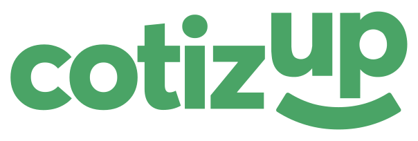

CotizUp

- Le projet
- Plateforme de cagnottes en ligne pour financer un projet, une cause ou un événement.
- Mon intervention
- Depuis son lancement en 2017, je développe la plateforme en Symfony et PHP. J’ai notamment mis en place les dons mensuels et le parcours complet de gestion des reçus fiscaux. J’en assure aujourd’hui la direction technique.